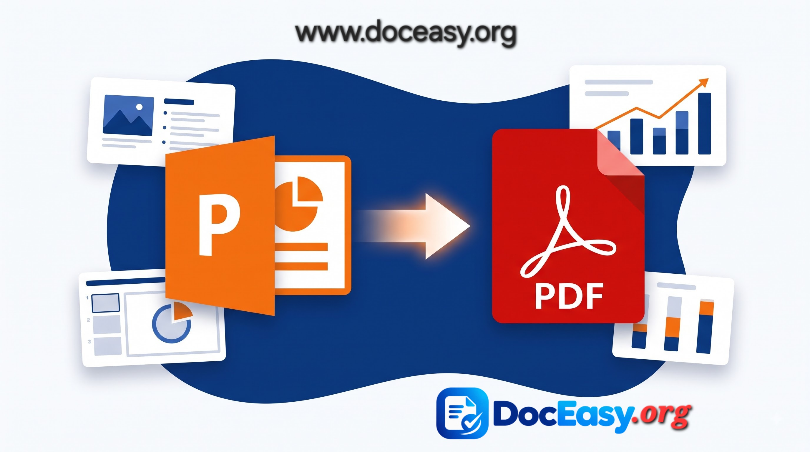

PowerPoint to PDF
Convert PowerPoint presentations (PPT / PPTX) to PDF instantly. 100% browser-based — your files never leave your device.
Drop your PowerPoint file here
or click to browse · PPTX supported · Max 25 MB
Processing…
Why use DocEasy for PowerPoint to PDF?
- 100% private — files never leave your device
- Every slide becomes a clean PDF page
- Perfect for text-heavy presentations
- Free forever — no signup required
How to Convert PowerPoint to PDF: Complete Guide
PowerPoint presentations are one of the most widely used formats for business meetings, lectures, and pitch decks. But when it is time to share a presentation, a PDF is often the smarter choice. PDFs preserve the content, open on any device without needing PowerPoint, and cannot be accidentally edited. This guide walks you through how the DocEasy PowerPoint to PDF tool works, when to use it, and what to expect from the output.

Why Convert PowerPoint to PDF?
PowerPoint files are designed for presenting, not for sharing. When you send a .pptx file to someone, several problems can arise: they may not have PowerPoint installed, fonts may not render correctly on their machine, or slide layouts may shift. A PDF solves all of these problems at once.
PDFs are the universal format for documents. They open in every browser, on every device, without needing any special software. They also look exactly the same no matter who opens them, which makes them ideal for sending presentations to clients, professors, or colleagues. Finally, PDFs discourage casual editing — the receiver cannot accidentally change your slides.
Step-by-Step: How to Use the PowerPoint to PDF Tool
- Upload Your PowerPoint File: Drag and drop your
.pptxfile onto the upload zone, or click "Choose PowerPoint File" to browse. Files up to 25 MB are supported. - Automatic Slide Extraction: The tool reads your presentation using a JavaScript library that parses PPTX files directly in your browser. Every slide's title and text content is captured.
- Slide Rendering: Each slide becomes a page in the PDF. The slide title appears as a heading, and bullet points are rendered as a clean list below it.
- Watermark Applied: A small doceasy.org watermark appears at the bottom of every page, keeping your document branded.
- Download Instantly: Your PDF is created and downloaded to your device in seconds. No server, no email, no waiting.
What Kind of Presentations Work Best?
- Lecture notes and study material: Slides with headings and bullet points convert cleanly.
- Business reports and summaries: Text-heavy presentations with clear structure.
- Meeting agendas and plans: Simple slide decks that emphasize content over design.
- Training material: Instructional slides with step-by-step points.
- Simple pitch decks: Decks that focus on written information rather than visuals.
Understanding the Limitations
This tool performs a content extraction, not a pixel-perfect conversion. That means:
- Text is preserved: Slide titles, bullet points, and body text come through clearly.
- Images are not preserved: Photos, charts, and graphics embedded in slides are not included.
- Animations and transitions: Not applicable in a PDF, so they are ignored.
- Complex layouts: Multi-column slides, floating text boxes, and overlapping elements are simplified.
- Speaker notes: Not extracted by this tool.
If your presentation relies heavily on visuals, a desktop tool like Microsoft PowerPoint's built-in "Save as PDF" or LibreOffice will give you more accurate results. But for text-heavy decks — lecture notes, meeting agendas, structured reports — this tool produces a clean, useful PDF.
Privacy First — Always
Everything runs in your browser. Your PowerPoint file is never uploaded to any server. There is no account to create, no email to verify, and no file sitting in a remote database. When you close the tab, the file is gone from memory. This makes DocEasy suitable for sensitive presentations like internal business reports, confidential pitches, and personal lecture notes.
Tips for the Best Results
- Use a
.pptxfile rather than an old.pptfile whenever possible — modern PPTX files are supported better. - Keep your presentation under 25 MB for the fastest conversion.
- Simplify your slides — focus on clear headings and bullet points rather than complex layouts.
- Test the output — open the PDF and check that the text content is preserved as expected.
- For image-heavy decks, use PowerPoint's built-in "Save as PDF" feature or LibreOffice for a closer match.
Frequently Asked Questions
Is the PowerPoint to PDF converter free?
Yes. DocEasy is completely free with no signup, no watermark fees, and no hidden limits.
Are my files uploaded to your servers?
No. Everything runs inside your browser. Your presentation never leaves your device.
Will images be preserved?
No. This tool extracts text content only. Images, charts, and graphics are not included in the PDF. For image-heavy slides, use PowerPoint's built-in "Save as PDF" feature.
How many slides are supported?
There is no hard limit on the number of slides, but very large presentations (over 25 MB) may take longer to process.
Will animations be preserved?
Animations and transitions are not applicable in PDFs. The static content of each slide is what gets rendered.
Does it work on mobile?
Yes. DocEasy works on any modern browser — desktop, tablet, or smartphone — with no app install required.
Try It Now
Ready to convert your presentation? Scroll up and drop your file into the upload zone. The whole process takes just a few seconds, and your PDF will be ready to download immediately. If you find this tool useful for text-heavy decks, share it with friends and colleagues.